HOLT NEWS — 화제의 연구와 뉴스를 쉽게 풀어 쓰는 간행물
- 서울0°/12°보통
- 인천0°/12°보통
- 춘천1°/13°좋음
- 대전0°/13°보통
- 대구3°/15°좋음
- 광주3°/16°보통
- 부산9°/17°좋음
- 제주10°/15°보통
- 도쿄7°/12°
- 베이징0°/11°
- 뉴욕8°/14°
- 런던5°/10°
- 파리8°/8°
- 베를린2°/4°
- LA18°/30°
- 시카고4°/14°
- 토론토7°/9°
- 홍콩13°/22°
- 싱가포르23°/30°
- 하노이17°/20°
- 호찌민24°/34°
- 시드니12°/21°
- 두바이27°/32°


실적 발표
전년 같은 분기 대비다가오는 발표
서울 아파트 실거래
2026년 10월 계약 · 3.3㎡당 중위 가격 · 1년 전보다10월 최고가 거래
- 262억나인원한남용산 한남동 · 274㎡ · 1층 · 10.1
- 143억나인원한남용산 한남동 · 207㎡ · 5층 · 10.3
- 93억신현대11차강남 압구정동 · 183㎡ · 4층 · 10.8
- 92억신현대11차강남 압구정동 · 183㎡ · 12층 · 10.19
- 92억신현대12차강남 압구정동 · 183㎡ · 6층 · 10.21
이번 주 공연·전시·축제
[서울] Tiffany & Co.와 함께하는 필라델피아 오케스트라 & 마린 알솝 with 임윤찬
롯데콘서트홀
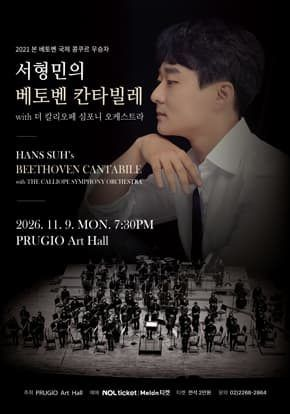
서형민의 베토벤 칸타빌레 with 더 칼리오페 심포니 오케스트라
푸르지오아트홀
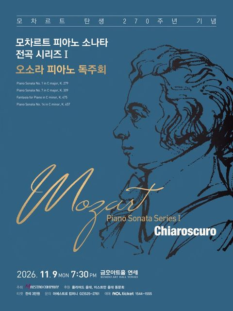
오소라 피아노 독주회: 모차르트 탄생 270주년 기념, 모차르트 피아노 소나타 전곡 시리즈 Ⅰ
금호아트홀 연세
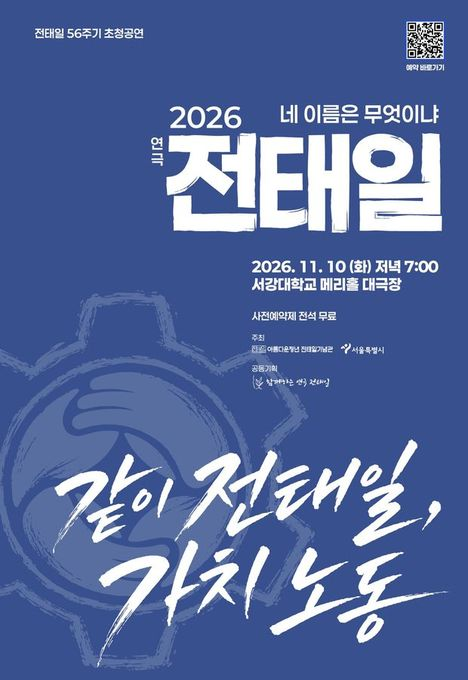
전태일 56주기 초청공연 <연극 전태일-네 이름은 무엇이냐>
서강대 메리홀 대극장
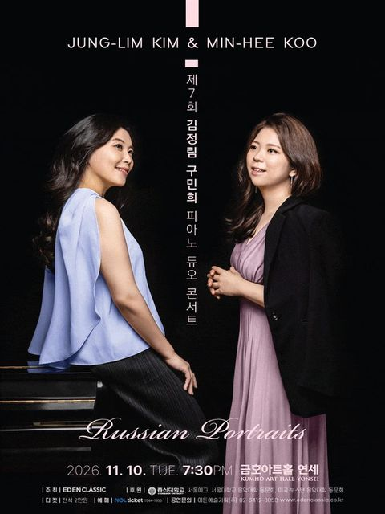
제7회 김정림 구민희 피아노 듀오 콘서트
금호아트홀 연세
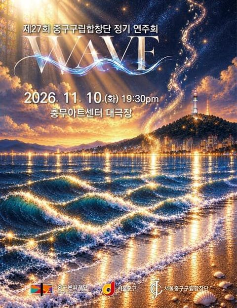
제27회 중구구립합창단 정기연주회
충무아트센터

2026 부천악기은행 성과공유회
복사골문화센터 판타지아극장

[파주] 클라라에게, 편지로 듣는 슈만
솔가람아트홀 대공연장
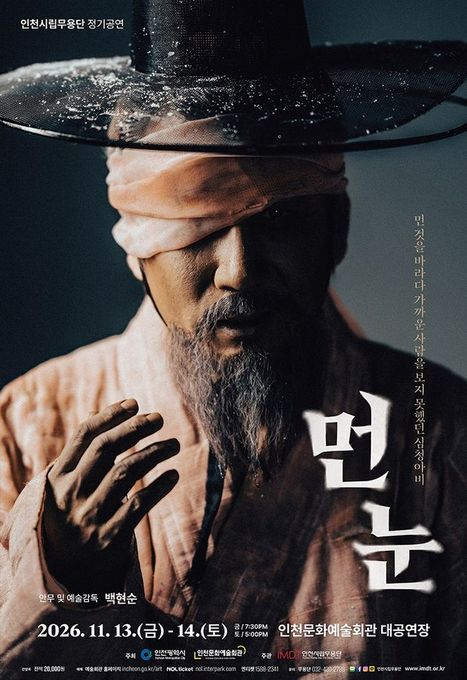
인천시립무용단 제93회 정기공연: 먼 눈
인천문화예술회관 대공연장
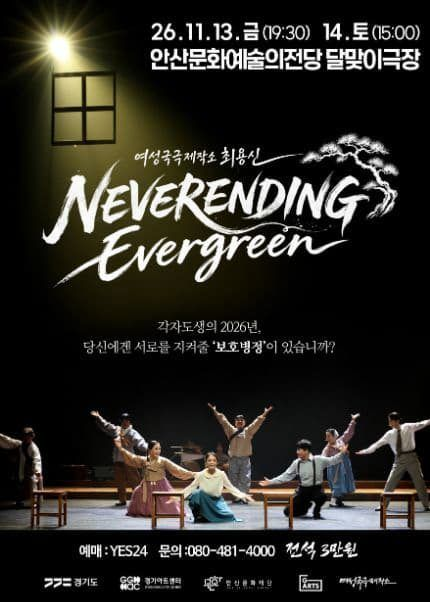
[안산] 여성국극제작소 최용신, 네버엔딩 에버그린
안산문화예술의전당 달맞이극장
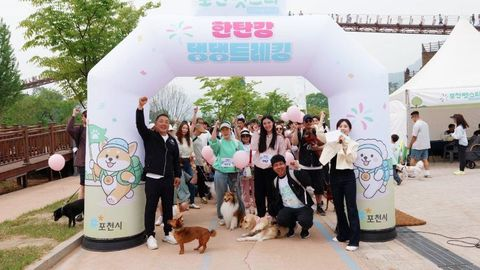
포천펫스타
경기도 포천시 신북면 아트밸리로 234
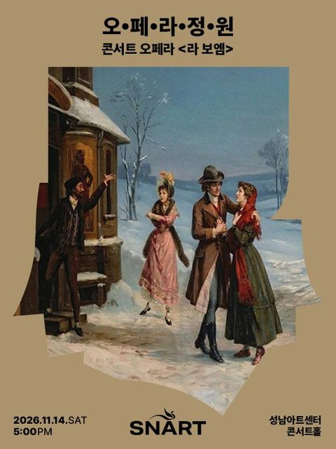
2026 성남아트센터 오페라 정원 <라 보엠>
성남아트센터 콘서트홀
[정선] 정선군고창군 상호결연 2주년 기념공연 1872 고창히어로
정선아리랑센터 아리랑홀

[철원] 광명X철원 평화음악제: 여명의 동반자
철원군 화강문화센터 공연장

[원주] 제206회 원주시립교향악단 정기연주회
원주백운아트홀

뮤지컬 ＜사의 찬미＞
춘천문화예술회관 공연장
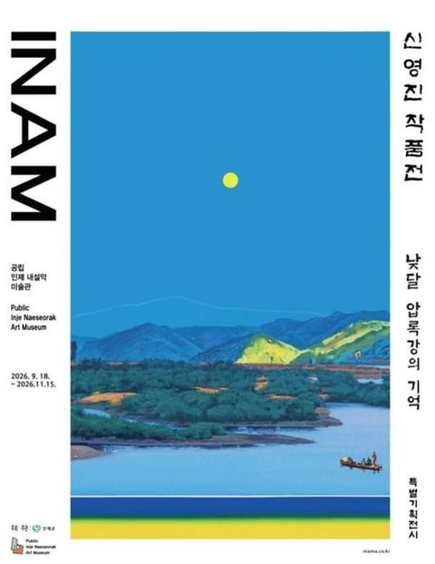
신영진 작품전 <낮달 - 압록강의 기억>
공립 인제내설악미술관
전시[우리동네 MG갤러리] 남은정 작가 《남은情-두 시대의 조우》
MG삼척중앙새마을금고 우리동네 MG갤러리

제79회 충주시립우륵국악단 정기연주회: 진정성 Ⅲ. 사유의 확장
충주시문화회관

[대전] 기획연주회5 세계음악시리즈 <Voice of America>
대전예술의전당 앙상블홀

[대전] 아베체 심포니 오케스트라 제 2회 정기연주회
대전예술가의집 누리홀

[보령] 늘근도둑이야기
보령문화예술회관 대공연장
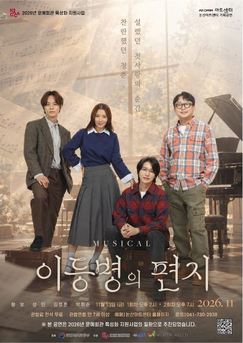
[논산] 이등병의 편지
논산아트센터(구. 논산문화예술회관) 대공연장

[대전] 대전아트콰이어 기획연주회 3. 슬기로운 합창생활
대전시립연정국악원 큰마당
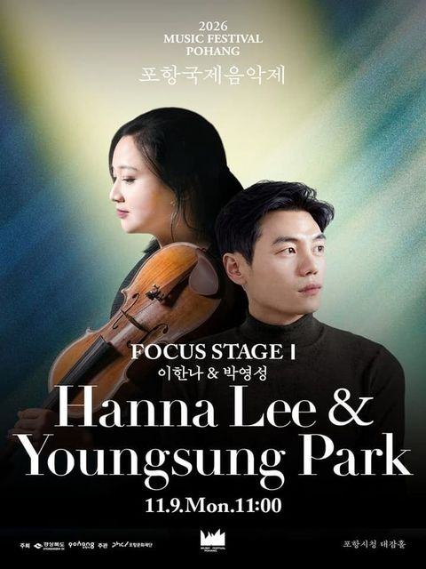
포항국제음악제, 포커스 스테이지 Ⅰ. 이한나 & 박영성
포항시청 대잠홀
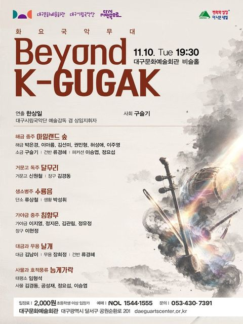
[대구] 화요국악무대, Beyond K-GUGAK
대구문화예술회관 비슬홀
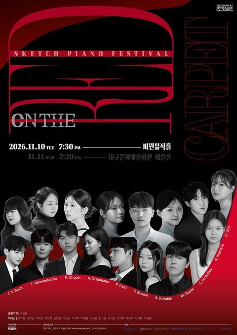
[대구] 제8회 스케치 정기연주회: 온 더 레드카펫 (11.10)
비원뮤직홀 콘서트홀
음악/콘서트2026 포항국제음악제, 포항시립교향악단 with 김영욱&율리안 슈테켈
포항문화예술회관 대공연장
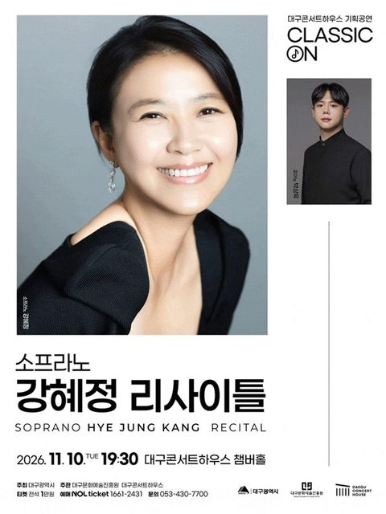
[대구] 클래식 온: 소프라노 강혜정 리사이틀
대구콘서트하우스

[대구] 2026월드오케스트라페스티벌, 대구유스오케스트라
대구콘서트하우스
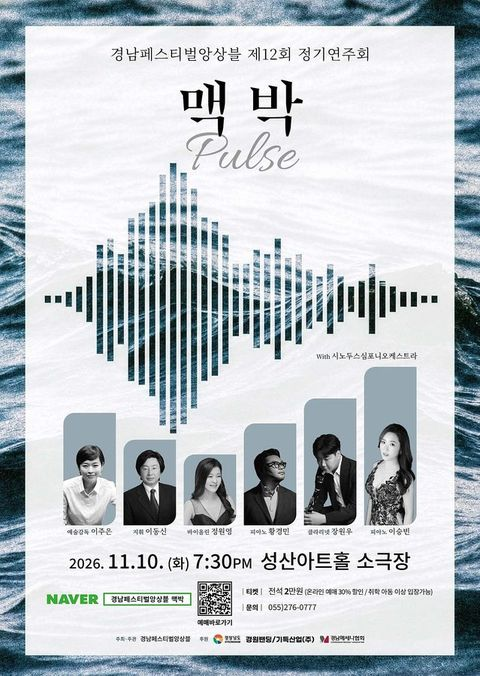
[창원] 경남페스티벌앙상블 제12회 정기연주회 맥박
성산아트홀 소극장
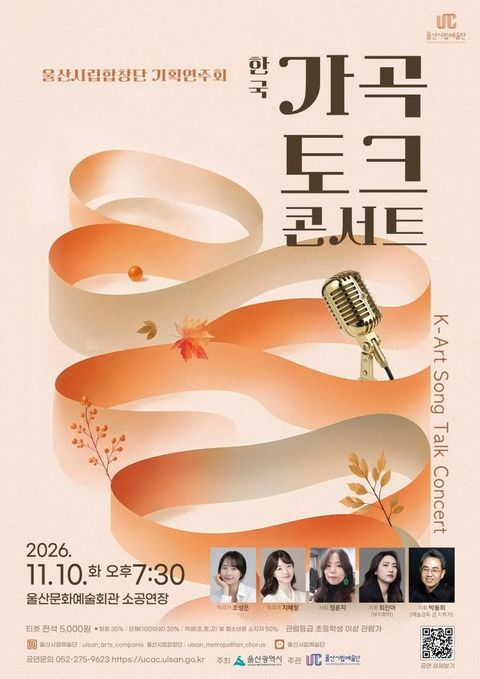
울산시립합창단 기획연주회: 한국가곡 토크콘서트
울산문화예술회관 소공연장
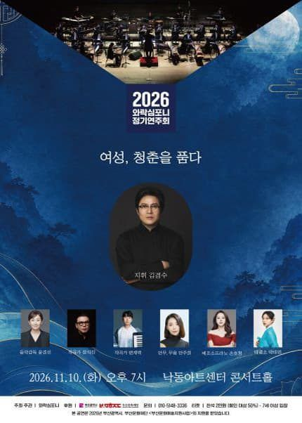
[부산] 와락심포니 정기연주회: 여성, 청춘을 품다
낙동아트센터
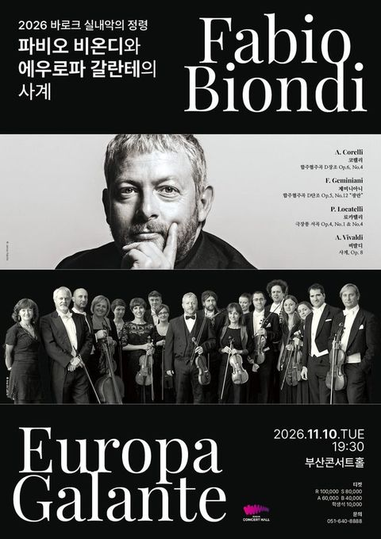
[부산] 바로크 실내악의 정령: 파비오 비온디와 에우로파 갈란테의 사계
부산콘서트홀

샌드아트뮤지컬 [한아이]
부산시민회관 소극장
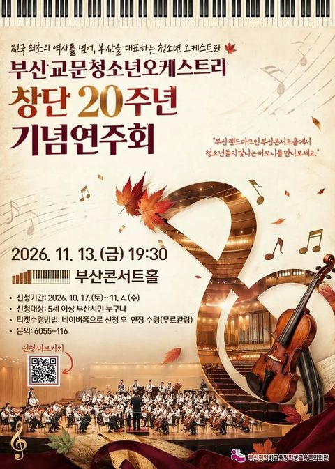
부산교문청소년오케스트라 창단 20주년기념음악회
부산콘서트홀
[장성] 헤어드레서
장성문화예술회관 대공연장

[전남 광주] 전남광주통합특별시립교향악단 체임버 시리즈 VII ‘Souvenir’
광주예술의전당

[무안] 모스틀리 오케스트라의 스토리가 있는 음악회: 내 사랑을 받아주세요
무안승달문화예술회관 대공연장

제85회 군산시립교향악단 기획연주회: Young Artist Concert
군산예술의전당 대공연장
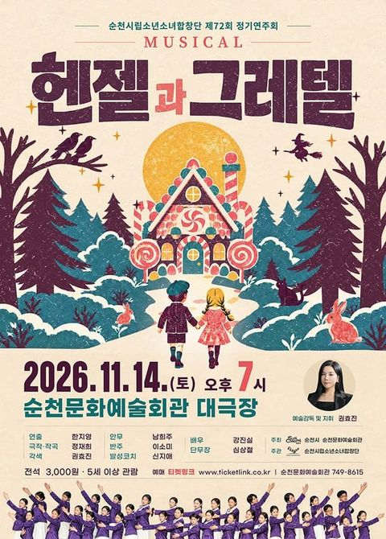
순천시립소년소녀합창단 제72회 정기공연: 헨젤과 그레텔
순천문화예술회관 대극장

2026 국립남도국악원 토요상설 토요상설: 국악이 좋다, 국립남도국악원 국악연주단 <국악의 향연>
국립남도국악원 진악당

[제주] 그때는 그랬지!
제주특별자치도문예회관

제주특별자치도립 서귀포관악단 2026 11월 토요힐링콘서트
서귀포예술의전당 소극장

2026 제5회 제주비엔날레 허끄곡 모닥치곡 이야홍 : 변용의 기술
제주특별자치도 제주시 1100로 2894-78

2026 제5회 제주비엔날레 《허끄곡 모닥치곡 이야홍: 변용의 기술》
제주도립미술관
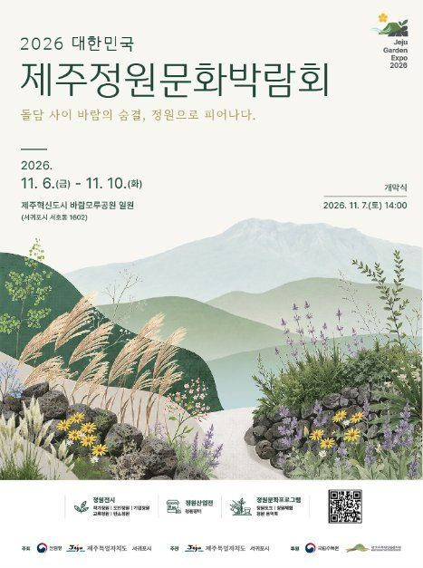
2026 대한민국 제주정원문화박람회
제주특별자치도 서귀포시 서호남로 19-30
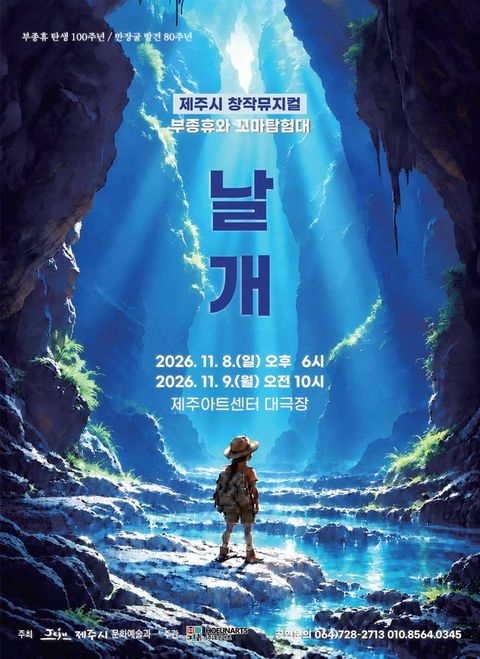
[제주] 부종휴와 꼬마 탐험대: 날개
제주아트센터 대극장


자료: 기상청 · MET Norway · 에어코리아 · 한국관광공사